Turn the reels your friends share into places you actually go.
Your group chat is full of "we should go here!" reels that nobody acts on. SpotBot lives in Discord: paste a reel and it reads the caption, the audio and the text on the video, works out the place, and posts a card your friends can vote on. At three votes it's on the server calendar.
Live demo
A real Discord server, start to finish: paste a reel, get a card, vote, lock it in, plan a night out.
Features
Every screen below is drawn from the bot's own card code, so it's exactly what SpotBot posts. Only the people and the example link are made up.
🎬 Paste a reel, that's it
No command to learn. Paste an Instagram or TikTok link in any channel and SpotBot picks it up, says what it's doing, and turns its reply into a card in about 20–45 seconds.
Works in every channel, or one reels channel picked in /setup.
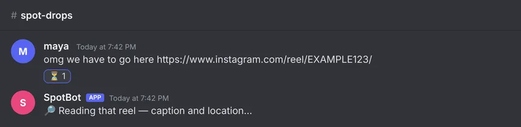
📇 A card the group can vote on
The place, what it's about, a link back to the reel, a map, and who's in. Anyone can fix a wrong name, ask for similar spots, or mark it "not a place".
Buttons: Want to go · Not for me · Add suggestions · Edit · Remove · Not a place
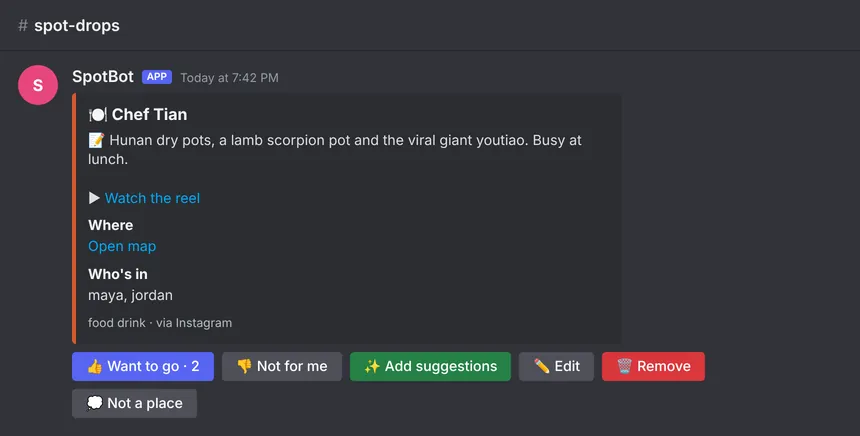
📅 Three votes → it's on the calendar
At three "Want to go" votes, SpotBot offers to lock it in as a Discord Scheduled Event, using the time from the reel. Afterwards it asks whether you went, and places you actually went rank higher next time.
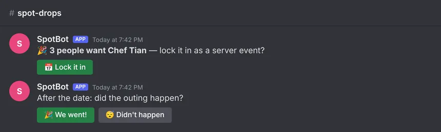
🧭 /plan reads the room
Chat as usual, then type /plan. SpotBot sums up the vibe, area and budget it
heard and pitches saved spots that fit, each one votable. Name a place and it's pinned; say
where you are and picks are sorted by distance.
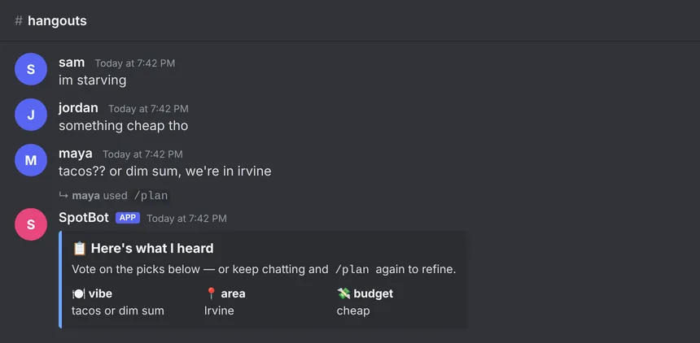
🔎 Find anything you saved
/events searches by vibe, /browse pages through spots by kind, area
or date, and /catalog and /digest show what's most wanted.
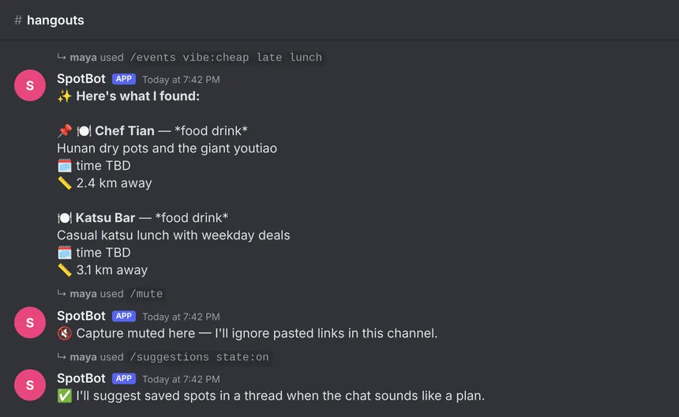
🤷 Honest when it can't read a reel
Private, deleted, too slow or no venue: SpotBot says which, in plain words, and offers Retry or Add manually. A paste is never wasted.
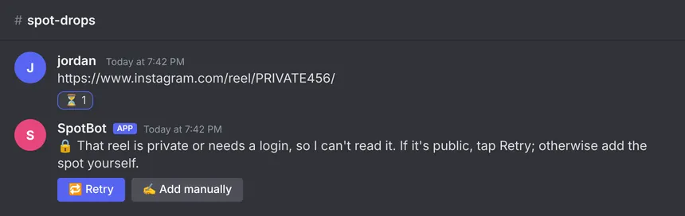
💭 Knows a recipe isn't a place
Recipes, memes and ads get a small grey card saying what they're about, kept out of the spot list. "Add it anyway" overrides it.
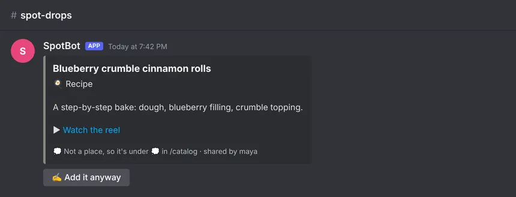
⚙️ Set up in 30 seconds
/setup is a private three-step form: which channel to watch, your home city for
distances, and save. Running it again changes only what you change.
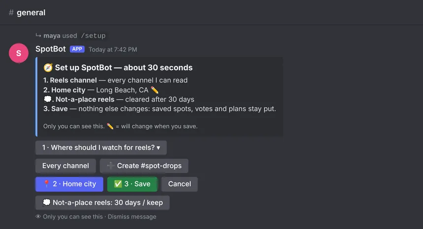
🔒 Your data, and a delete button
/privacy lists exactly what's kept and what isn't, where it goes and who can see it,
with a button to delete all of it. Your chat is never saved.
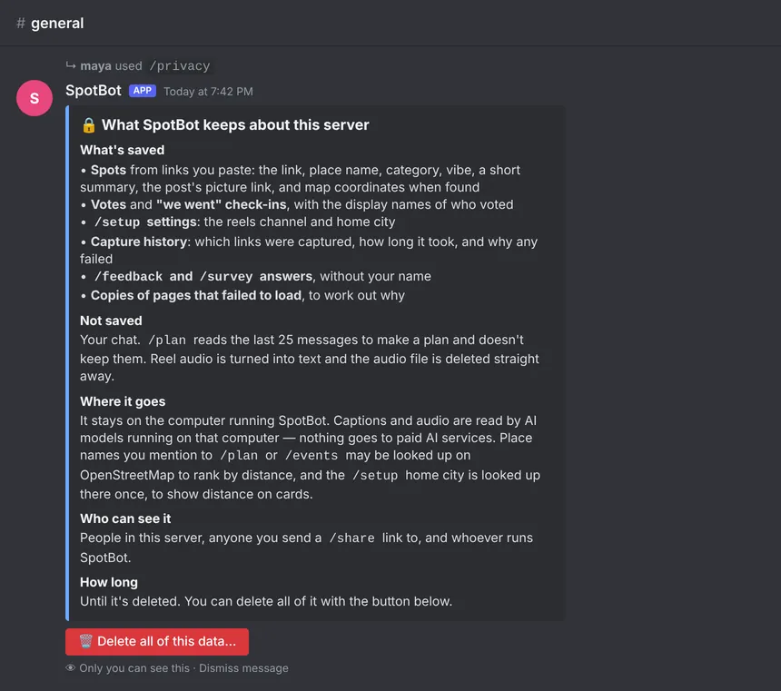
🌐 A web page for friends outside Discord
/share gives a read-only link to the server's spot list. Nobody can vote or
delete through it.
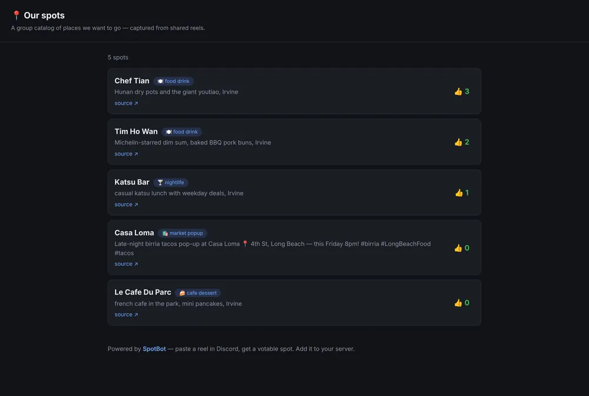
Also: /feedback and a 2-minute usability /survey,
/mute for channels where capture should stay off, /suggestions for
spot ideas when a chat sounds like a plan, and /help.
How it works
Everything runs on one computer the group controls. Nothing goes to paid AI services.
The capture pipeline
- Fetch: Playwright renders the page, with an embed-page fallback for login walls.
- Extract: Open Graph and JSON-LD tags, then per-site selectors.
- Listen and read: faster-whisper (audio) and RapidOCR (on-screen text), both optional.
- Normalize: the rule parser picks venue, category and city, each with a confidence.
- Resolve time: "this Friday 8pm" becomes a real date.
- Validate: strict Pydantic checks; platform boilerplate is never a venue.
- Store: a JSONL log (the source of truth) and ChromaDB, one collection per server.
If any step fails, the failure gets a class (private, timeout, not a place…) that the bot turns into a plain-language message.
Technology
Python end to end, local AI, and nothing that costs money to run.
| Layer | What we use |
|---|---|
| Bot | discord.py 2.7: slash commands, persistent buttons that survive restarts, Scheduled Events |
| Services | FastAPI + Uvicorn: the admin/ingest app (:8010) and the recommend service (:8003) |
| Capture | Playwright 1.60 with headless Chromium; httpx |
| Audio and screen text | faster-whisper, RapidOCR (both optional) |
| AI models | Ollama, running locally: mxbai-embed-large embeddings; a fine-tuned multilingual MiniLM cross-encoder (M2) in research |
| Data | ChromaDB 1.5 on disk (one collection per server) and a JSONL log |
| Maps | OpenStreetMap: Nominatim and Overpass |
| Quality | pytest (1,196 offline tests), security attack tests, a frozen train/dev/test split with a test-read ledger |
| Delivery | Docker Compose, GitHub Actions CI |
🔐 Every catalog call is signed
Each server's data is reached only with an HMAC token for that server, so one server can never read or vote in another's catalog. Keys rotate without downtime.
🙊 The bot never pings
Every message goes out with mentions disabled, so a pasted @everyone pings nobody.
🏠 Local-first
Captions and audio are read by models on the host machine. No paid APIs, no post text sent off the machine.
📊 An operations dashboard
/dash shows services, time-to-card, capture health and the job queue. Counts only, never post contents.
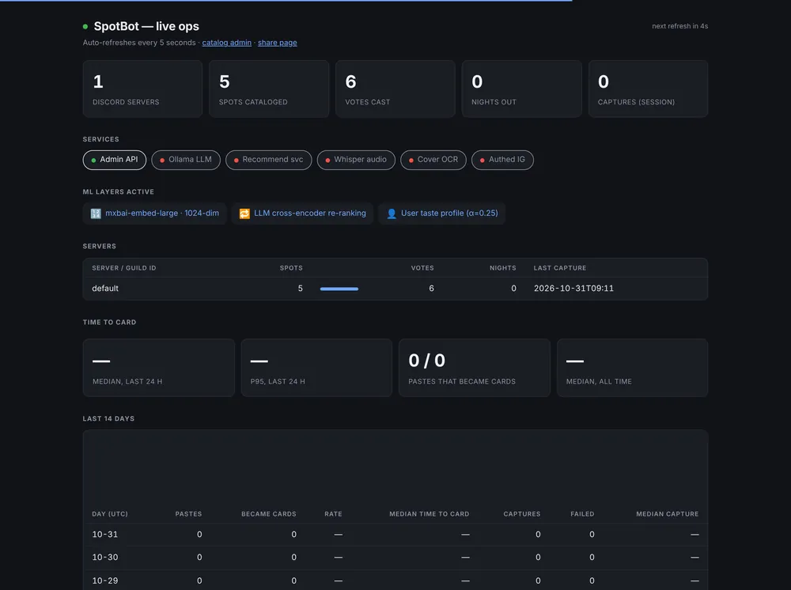
By the numbers
Measured on held-out reels, never on the data we tuned on.
The bot runs the rules today; M2 is the model we're moving it to. Full method and confidence intervals: the evaluation report.
The team
Four people, five tracks. CSULB CECS 491A, Fall 2026.
Lead · Platform and Experience
Capture
Accuracy and evaluation
Cybersecurity